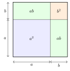

Difference of Two Squares. Square of a Sum or a DifferenceHiệu hai bình phương. Bình phương của một tổng hay một hiệu
Grade 8 · Topic: Algebraic Identities and ApplicationsLớp 8 · Chủ đề: Hằng đẳng thức đáng nhớ và ứng dụng
1Lesson IntroductionGiới thiệu bài học
Learning goalsMục tiêu bài học
By the end of this lesson you can:
Sau bài học này, em có thể:
recognize an identity;
nhận biết được hằng đẳng thức;
state and use the identities \(A^2-B^2\), \((A+B)^2\), \((A-B)^2\);
phát biểu và sử dụng được các hằng đẳng thức hiệu hai bình phương, bình phương của một tổng, bình phương của một hiệu;
expand expressions and write expressions as products or squares;
khai triển biểu thức và viết biểu thức dưới dạng tích hoặc bình phương;
calculate quickly and solve simple problems with these identities.
tính nhanh và giải bài toán đơn giản bằng các hằng đẳng thức.
2Mathematical VocabularyTừ vựng Toán học
identity – an equality \(A=B\) that is true for all values of the variables.
Hằng đẳng thức – đẳng thức \(A=B\) đúng với mọi giá trị của các biến.
left-hand side (LHS) / right-hand side (RHS) – the expressions on the left and on the right of "=".
Vế trái / vế phải – biểu thức ở bên trái và bên phải dấu "=".
square – \(A^2\); for example, the square of \(3x\) is \(9x^2\).
Bình phương – \(A^2\); ví dụ bình phương của \(3x\) là \(9x^2\).
difference of two squares – \(A^2-B^2=(A-B)(A+B)\).
Hiệu hai bình phương – \(A^2-B^2=(A-B)(A+B)\).
square of a sum – \((A+B)^2=A^2+2AB+B^2\).
Bình phương của một tổng – \((A+B)^2=A^2+2AB+B^2\).
square of a difference – \((A-B)^2=A^2-2AB+B^2\).
Bình phương của một hiệu – \((A-B)^2=A^2-2AB+B^2\).
expand – write a product or a power as a sum.
Khai triển – viết một tích hay một lũy thừa thành tổng.
3Useful English PhrasesCụm từ tiếng Anh thường gặp
Which of the following equations are identities?
Đẳng thức nào là hằng đẳng thức?
Calculate using identities.
Tính bằng cách dùng hằng đẳng thức.
Expand the expressions.
Khai triển các biểu thức.
Write the expressions as products / squares.
Viết các biểu thức dưới dạng tích / bình phương.
Prove that the equation is true for every value of the variables.
Chứng minh đẳng thức đúng với mọi giá trị của các biến.
\(A^2-B^2\) is read "the difference of two squares"; \((A+B)^2\) "the square of a sum"; \((A-B)^2\) "the square of a difference".
Cách đọc: \(A^2-B^2\) – hiệu hai bình phương; \((A+B)^2\) – bình phương của một tổng; \((A-B)^2\) – bình phương của một hiệu.
4Prerequisite ReviewÔn tập kiến thức nền
Multiplying polynomials (Lesson 4). \((a+b)(c+d)=ac+ad+bc+bd\).
Nhân hai đa thức (Bài 4). \((a+b)(c+d)=ac+ad+bc+bd\).
Squares. \((3x)^2=9x^2\), \((-2y)^2=4y^2\).
Bình phương. \((3x)^2=9x^2\), \((-2y)^2=4y^2\).
5TheoryLý thuyết
5.1 IdentitiesHằng đẳng thức
DefinitionĐịnh nghĩa
An identity is an equality \(A=B\) whose two sides always take the same value for every value of the variables.
Hằng đẳng thức là đẳng thức có dạng \(A=B\), trong đó hai vế luôn nhận cùng một giá trị với mọi giá trị của biến.
\(x(x+2)=x^2+2x\) is an identity; \(2x+1=3x\) is not (it is true only for \(x=1\)).
\(x(x+2)=x^2+2x\) là hằng đẳng thức; \(2x+1=3x\) không phải (chỉ đúng khi \(x=1\)).
5.2 Three identitiesBa hằng đẳng thức
IdentitiesHằng đẳng thức đáng nhớ
Difference of two squares: \(A^2-B^2=(A-B)(A+B)\).
Hiệu hai bình phương: \(A^2-B^2=(A-B)(A+B)\).
Square of a sum: \((A+B)^2=A^2+2AB+B^2\).
Bình phương của một tổng: \((A+B)^2=A^2+2AB+B^2\).
Square of a difference: \((A-B)^2=A^2-2AB+B^2\).
Bình phương của một hiệu: \((A-B)^2=A^2-2AB+B^2\).
\(A\) and \(B\) may be numbers, variables or expressions: \((2x+3y)^2=(2x)^2+2\cdot2x\cdot3y+(3y)^2\).
\(A\), \(B\) có thể là số, biến hoặc biểu thức: \((2x+3y)^2=(2x)^2+2\cdot2x\cdot3y+(3y)^2\).

Two directionsHai chiều sử dụng
Left to right: expand, e.g. \((x-5)^2=x^2-10x+25\). Right to left: write as a product or a square, e.g. \(x^2-10x+25=(x-5)^2\), \(9-y^2=(3-y)(3+y)\).
Từ trái sang phải: khai triển, chẳng hạn \((x-5)^2=x^2-10x+25\). Từ phải sang trái: viết thành tích hoặc bình phương, chẳng hạn \(x^2-10x+25=(x-5)^2\), \(9-y^2=(3-y)(3+y)\).
Quick calculation: \(51^2=(50+1)^2=2601\); \(29\cdot31=30^2-1^2=899\).
Tính nhanh: \(51^2=(50+1)^2=2601\); \(29\cdot31=30^2-1^2=899\).
Watch out!Lưu ý
\((A+B)^2\ne A^2+B^2\): never forget the middle term \(2AB\). Also \((A-B)^2=(B-A)^2\).
\((A+B)^2\ne A^2+B^2\): không được quên hạng tử \(2AB\). Ngoài ra \((A-B)^2=(B-A)^2\).
6Worked ExamplesVí dụ có lời giải
ExampleVí dụ 1RememberingNhận biết – Identity or not?Có phải hằng đẳng thức?
Which equalities are identities?
a) \(x(x+2)=x^2+2x\);
b) \(2x+1=3x\);
c) \((x+1)^2=x^2+2x+1\);
d) \(x^2-4=0\).
Đẳng thức nào là hằng đẳng thức?
a) \(x(x+2)=x^2+2x\);
b) \(2x+1=3x\);
c) \((x+1)^2=x^2+2x+1\);
d) \(x^2-4=0\).
Analysis: Check whether both sides are equal for every \(x\).
Phân tích: Kiểm tra hai vế có bằng nhau với mọi \(x\) hay không.
a) and c): expanding the left side gives the right side for every \(x\).
a) và c): khai triển vế trái được đúng vế phải với mọi \(x\).
b) is true only for \(x=1\); d) only for \(x=\pm2\).
b) chỉ đúng khi \(x=1\); d) chỉ đúng khi \(x=\pm2\).
a) and c) are identities.
a) và c) là hằng đẳng thức.
ExampleVí dụ 2UnderstandingThông hiểu – ExpandKhai triển
Expand:
a) \((2x+3y)^2\);
b) \(\left(x-\dfrac{1}{2}\right)^2\);
c) \((3x-y)(3x+y)\).
Khai triển:
a) \((2x+3y)^2\);
b) \(\left(x-\dfrac{1}{2}\right)^2\);
c) \((3x-y)(3x+y)\).
Analysis: Identify \(A\) and \(B\) first.
Phân tích: Xác định \(A\) và \(B\) trước.
a) \(A=2x,\ B=3y\): \(4x^2+12xy+9y^2\).
a) \(A=2x,\ B=3y\): \(4x^2+12xy+9y^2\).
b) \(A=x,\ B=\dfrac{1}{2}\): \(x^2-x+\dfrac{1}{4}\).
b) \(A=x,\ B=\dfrac{1}{2}\): \(x^2-x+\dfrac{1}{4}\).
c) \((A-B)(A+B)=A^2-B^2\): \(9x^2-y^2\).
c) \((A-B)(A+B)=A^2-B^2\): \(9x^2-y^2\).
\(4x^2+12xy+9y^2\); \(x^2-x+\dfrac{1}{4}\); \(9x^2-y^2\).
\(4x^2+12xy+9y^2\); \(x^2-x+\dfrac{1}{4}\); \(9x^2-y^2\).
ExampleVí dụ 3UnderstandingThông hiểu – Write as a square or a productViết thành bình phương hoặc tích
Write as a square or a product:
a) \(x^2-6x+9\);
b) \(4x^2+4xy+y^2\);
c) \(25-16y^2\).
Viết dưới dạng bình phương hoặc tích:
a) \(x^2-6x+9\);
b) \(4x^2+4xy+y^2\);
c) \(25-16y^2\).
Analysis: Look for \(A^2\), \(B^2\) and the middle term \(2AB\).
Phân tích: Tìm \(A^2\), \(B^2\) và hạng tử \(2AB\).
a) \(x^2-2\cdot x\cdot3+3^2=(x-3)^2\).
a) \(x^2-2\cdot x\cdot3+3^2=(x-3)^2\).
b) \((2x)^2+2\cdot2x\cdot y+y^2=(2x+y)^2\).
b) \((2x)^2+2\cdot2x\cdot y+y^2=(2x+y)^2\).
c) \(5^2-(4y)^2=(5-4y)(5+4y)\).
c) \(5^2-(4y)^2=(5-4y)(5+4y)\).
\((x-3)^2\); \((2x+y)^2\); \((5-4y)(5+4y)\).
\((x-3)^2\); \((2x+y)^2\); \((5-4y)(5+4y)\).
ExampleVí dụ 4Basic applicationVận dụng thấp – Calculate quicklyTính nhanh
Calculate quickly:
a) \(103^2\);
b) \(98\cdot102\);
c) \(49^2\).
Tính nhanh:
a) \(103^2\);
b) \(98\cdot102\);
c) \(49^2\).
Analysis: Write each number using a round number.
Phân tích: Viết mỗi số qua một số tròn trăm, tròn chục.
a) \((100+3)^2=10000+600+9=10609\).
a) \((100+3)^2=10000+600+9=10609\).
b) \((100-2)(100+2)=10000-4=9996\).
b) \((100-2)(100+2)=10000-4=9996\).
c) \((50-1)^2=2500-100+1=2401\).
c) \((50-1)^2=2500-100+1=2401\).
\(10609\); \(9996\); \(2401\).
\(10609\); \(9996\); \(2401\).
ExampleVí dụ 5ApplicationVận dụng – Enlarging a square gardenMở rộng vườn hình vuông
A square garden has side \(x\) m. Each side is increased by 3 m and the area increases by 69 m². Find \(x\).
Một mảnh vườn hình vuông cạnh \(x\) m. Mở rộng mỗi cạnh thêm 3 m thì diện tích tăng thêm 69 m². Tìm \(x\).
Analysis: Increase = new area − old area.
Phân tích: Phần tăng thêm = diện tích mới − diện tích cũ.
\((x+3)^2-x^2=x^2+6x+9-x^2=6x+9\).
\((x+3)^2-x^2=x^2+6x+9-x^2=6x+9\).
\(6x+9=69\Rightarrow 6x=60\Rightarrow x=10\).
\(6x+9=69\Rightarrow 6x=60\Rightarrow x=10\).
\(x=10\) m.
Cạnh vườn ban đầu là \(10\) m.
7PracticeBài tập luyện tập
A. Multiple ChoiceA. Trắc nghiệm nhiều lựa chọn
Expand \((4x+1)^2\).
Khai triển \((4x+1)^2\).
Answer: c. \((A+B)^2=A^2+2AB+B^2\) with \(A=4x,\ B=1\): \(16x^2+8x+1\).
Đáp án c. \((A+B)^2=A^2+2AB+B^2\) với \(A=4x,\ B=1\): \(16x^2+8x+1\).
Write \(x^2-4\) as a product.
Viết đa thức \(x^2-4\) dưới dạng tích.
Answer: a. \(A^2-B^2=(A-B)(A+B)\) with \(A=x,\ B=2\).
Đáp án a. \(A^2-B^2=(A-B)(A+B)\) với \(A=x,\ B=2\).
Choose the identity.
Chọn đẳng thức là hằng đẳng thức.
Answer: c. An identity is an equality that is true for all values of the variables.
Đáp án c. Hằng đẳng thức là đẳng thức mà hai vế luôn nhận cùng một giá trị với mọi giá trị của biến.
B. True or FalseB. Đúng hoặc sai
\((x-2)^2=x^2-4\).
\((x-2)^2=x^2-4\).
False. \((x-2)^2=x^2-4x+4\): do not forget the middle term \(-4x\).
Sai. \((x-2)^2=x^2-4x+4\): không được quên hạng tử \(-4x\).
\(4x^2-16=(2x-4)(-2x+4)\).
\(4x^2-16=(2x-4)(-2x+4)\).
False. \(4x^2-16=(2x-4)(2x+4)\).
Sai. \(4x^2-16=(2x-4)(2x+4)\).
C. Short AnswerC. Trả lời ngắn
Calculate \(66\cdot 74\) quickly using an identity.
Tính nhanh \(66\cdot 74\) bằng hằng đẳng thức.
Enter a number.
Nhập một số.
Answer: 4884. \((70-4)(70+4)=70^2-4^2=4884\).
Đáp số: 4884. \((70-4)(70+4)=70^2-4^2=4884\).
Find the positive number in the box: \(x^2+\square\, x+36=(x+6)^2\).
Tìm số dương thích hợp điền vào ô trống: \(x^2+\square\, x+36=(x+6)^2\).
Enter a number.
Nhập một số.
Answer: 12. The middle term is \(2\cdot x\cdot 6=12x\).
Đáp số: 12. Hạng tử giữa là \(2\cdot x\cdot 6=12x\).
D1. Self-practice – RememberingD1. Tự luyện – Mức Nhận biết
Complete the identity (the square of a difference): \((A-B)^2=\,?\)
Hoàn thành hằng đẳng thức (bình phương của một hiệu): \((A-B)^2=\,?\)
Answer: a. \((A-B)^2=A^2-2AB+B^2\).
Đáp án a. \((A-B)^2=A^2-2AB+B^2\).
How do we read \((A-B)^2\)?
Biểu thức \((A-B)^2\) được gọi là
Answer: c. \((A-B)^2\) is the square of a difference.
Đáp án c. \((A-B)^2\) là bình phương của một hiệu.
Write \(4x^2+28x+49\) in the form \((A+B)^2\). Then…
Viết \(4x^2+28x+49\) dưới dạng \((A+B)^2\). Khi đó
Answer: a. \(4x^2+28x+49=(2x)^2+2\cdot2x\cdot7+7^2\).
Đáp án a. \(4x^2+28x+49=(2x)^2+2\cdot2x\cdot7+7^2\).
D2. Self-practice – UnderstandingD2. Tự luyện – Mức Thông hiểu
Expand \((x-9y)^2\).
Khai triển \((x-9y)^2\).
Answer: a. \(x^2-18xy+81y^2\).
Đáp án a. \(x^2-18xy+81y^2\).
Find the product \((5x-7y)(5x+7y)\).
Tính \((5x-7y)(5x+7y)\).
Answer: b. \((A-B)(A+B)=A^2-B^2=25x^2-49y^2\).
Đáp án b. \((A-B)(A+B)=A^2-B^2=25x^2-49y^2\).
Write \(x^2+8x+16\) as the square of a binomial.
Viết đa thức \(x^2+8x+16\) dưới dạng bình phương của một tổng hoặc một hiệu.
Answer: d. \(x^2+8x+16=(x+4)^2\).
Đáp án d. \(x^2+8x+16=(x+4)^2\).
D3. Self-practice – Basic applicationD3. Tự luyện – Mức Vận dụng thấp
Simplify \((x+4)^2+(x-4)^2\).
Rút gọn biểu thức \((x+4)^2+(x-4)^2\).
Answer: d. \(=2x^2+32\).
Đáp án d. \(=2x^2+32\).
Find the value of \(x^2-2xy+y^2\) at \(x=103,\ y=3\).
Tính giá trị của biểu thức \(x^2-2xy+y^2\) tại \(x=103,\ y=3\).
Answer: a. \(x^2-2xy+y^2=(x-y)^2=100^2=10000\).
Đáp án a. \(x^2-2xy+y^2=(x-y)^2=100^2=10000\).
Calculate quickly: \(24\cdot 36\).
Tính nhanh: \(24\cdot 36\).
Answer: d. \(=30^2-6^2=900-36=864\).
Đáp án d. \(=30^2-6^2=900-36=864\).
D4. Self-practice – Advanced applicationD4. Tự luyện – Mức Vận dụng
Given \(a>b>0\), \(a^2+b^2=37\) and \(ab=6\). Find \(a-b\).
Cho \(a>b>0\) thỏa mãn \(a^2+b^2=37\) và \(ab=6\). Tính \(a-b\).
Answer: b. \((a-b)^2=a^2+b^2-2ab=25\) and \(a-b>0\), so \(a-b=5\).
Đáp án b. \((a-b)^2=a^2+b^2-2ab=25\) mà \(a-b>0\) nên \(a-b=5\).
A square garden has side \(x\) m. Each side is increased by 4 m, and the area increases by 104 m². Find \(x\).
Một mảnh vườn hình vuông cạnh \(x\) m. Người ta mở rộng mỗi cạnh thêm 4 m thì diện tích tăng thêm 104 m². Tìm \(x\).
Answer: a. \((x+4)^2-x^2=8x+16=104\Rightarrow x=11\).
Đáp án a. \((x+4)^2-x^2=8x+16=104\Rightarrow x=11\).
Find the smallest value of \(P=x^2-18x+87\).
Tìm giá trị nhỏ nhất của biểu thức \(P=x^2-18x+87\).
Answer: b. \(P=(x-9)^2+6\ge 6\); equality at \(x=9\).
Đáp án b. \(P=(x-9)^2+6\ge 6\); dấu bằng xảy ra khi \(x=9\).
A. Multiple ChoiceA. Trắc nghiệm nhiều lựa chọn
Expand \((2x+9)^2\).
Khai triển \((2x+9)^2\).
Answer: c. \((A+B)^2=A^2+2AB+B^2\) with \(A=2x,\ B=9\): \(4x^2+36x+81\).
Đáp án c. \((A+B)^2=A^2+2AB+B^2\) với \(A=2x,\ B=9\): \(4x^2+36x+81\).
Write \(9x^2-64y^2\) as a product.
Viết đa thức \(9x^2-64y^2\) dưới dạng tích.
Answer: c. \(A^2-B^2=(A-B)(A+B)\) with \(A=3x,\ B=8y\).
Đáp án c. \(A^2-B^2=(A-B)(A+B)\) với \(A=3x,\ B=8y\).
Which equality is true for every value of \(x\)?
Đẳng thức nào đúng với mọi giá trị của \(x\)?
Answer: a. An identity is an equality that is true for all values of the variables.
Đáp án a. Hằng đẳng thức là đẳng thức mà hai vế luôn nhận cùng một giá trị với mọi giá trị của biến.
B. True or FalseB. Đúng hoặc sai
\((x-8)^2=x^2-16x+64\).
\((x-8)^2=x^2-16x+64\).
True. \((x-8)^2=x^2-16x+64\): do not forget the middle term \(-16x\).
Đúng. \((x-8)^2=x^2-16x+64\): không được quên hạng tử \(-16x\).
\(9x^2-1=(3x-1)(3x+1)\).
\(9x^2-1=(3x-1)(3x+1)\).
True. \(9x^2-1=(3x-1)(3x+1)\).
Đúng. \(9x^2-1=(3x-1)(3x+1)\).
C. Short AnswerC. Trả lời ngắn
Calculate \(18\cdot 22\) quickly using an identity.
Tính nhanh \(18\cdot 22\) bằng hằng đẳng thức.
Enter a number.
Nhập một số.
Answer: 396. \((20-2)(20+2)=20^2-2^2=396\).
Đáp số: 396. \((20-2)(20+2)=20^2-2^2=396\).
Find the positive number in the box: \(4x^2+\square\, x+64=(2x+8)^2\).
Tìm số dương thích hợp điền vào ô trống: \(4x^2+\square\, x+64=(2x+8)^2\).
Enter a number.
Nhập một số.
Answer: 32. The middle term is \(2\cdot 2x\cdot 8=32x\).
Đáp số: 32. Hạng tử giữa là \(2\cdot 2x\cdot 8=32x\).
D1. Self-practice – RememberingD1. Tự luyện – Mức Nhận biết
Complete the identity (the square of a sum): \((A+B)^2=\,?\)
Hoàn thành hằng đẳng thức (bình phương của một tổng): \((A+B)^2=\,?\)
Answer: b. \((A+B)^2=A^2+2AB+B^2\).
Đáp án b. \((A+B)^2=A^2+2AB+B^2\).
How do we read \((A+B)^2\)?
Biểu thức \((A+B)^2\) được gọi là
Answer: d. \((A+B)^2\) is the square of a sum.
Đáp án d. \((A+B)^2\) là bình phương của một tổng.
Write \(16x^2+72x+81\) in the form \((A+B)^2\). Then…
Viết \(16x^2+72x+81\) dưới dạng \((A+B)^2\). Khi đó
Answer: d. \(16x^2+72x+81=(4x)^2+2\cdot4x\cdot9+9^2\).
Đáp án d. \(16x^2+72x+81=(4x)^2+2\cdot4x\cdot9+9^2\).
D2. Self-practice – UnderstandingD2. Tự luyện – Mức Thông hiểu
Expand \((5x-8y)^2\).
Khai triển \((5x-8y)^2\).
Answer: b. \(25x^2-80xy+64y^2\).
Đáp án b. \(25x^2-80xy+64y^2\).
Find the product \((4x-4y)(4x+4y)\).
Tính \((4x-4y)(4x+4y)\).
Answer: b. \((A-B)(A+B)=A^2-B^2=16x^2-16y^2\).
Đáp án b. \((A-B)(A+B)=A^2-B^2=16x^2-16y^2\).
Write \(x^2-18x+81\) as the square of a binomial.
Viết đa thức \(x^2-18x+81\) dưới dạng bình phương của một tổng hoặc một hiệu.
Answer: c. \(x^2-18x+81=(x-9)^2\).
Đáp án c. \(x^2-18x+81=(x-9)^2\).
D3. Self-practice – Basic applicationD3. Tự luyện – Mức Vận dụng thấp
Simplify \((x+7)^2+(x-7)^2\).
Rút gọn biểu thức \((x+7)^2+(x-7)^2\).
Answer: d. \(=2x^2+98\).
Đáp án d. \(=2x^2+98\).
Find the value of \(x^2-2xy+y^2\) at \(x=53,\ y=3\).
Tính giá trị của biểu thức \(x^2-2xy+y^2\) tại \(x=53,\ y=3\).
Answer: c. \(x^2-2xy+y^2=(x-y)^2=50^2=2500\).
Đáp án c. \(x^2-2xy+y^2=(x-y)^2=50^2=2500\).
Calculate quickly: \(68\cdot 72\).
Tính nhanh: \(68\cdot 72\).
Answer: c. \(=70^2-2^2=4900-4=4896\).
Đáp án c. \(=70^2-2^2=4900-4=4896\).
D4. Self-practice – Advanced applicationD4. Tự luyện – Mức Vận dụng
Given \(a>b>0\), \(a^2+b^2=25\) and \(ab=12\). Find \(a-b\).
Cho \(a>b>0\) thỏa mãn \(a^2+b^2=25\) và \(ab=12\). Tính \(a-b\).
Answer: b. \((a-b)^2=a^2+b^2-2ab=1\) and \(a-b>0\), so \(a-b=1\).
Đáp án b. \((a-b)^2=a^2+b^2-2ab=1\) mà \(a-b>0\) nên \(a-b=1\).
A square garden has side \(x\) m. Each side is increased by 3 m, and the area increases by 63 m². Find \(x\).
Một mảnh vườn hình vuông cạnh \(x\) m. Người ta mở rộng mỗi cạnh thêm 3 m thì diện tích tăng thêm 63 m². Tìm \(x\).
Answer: c. \((x+3)^2-x^2=6x+9=63\Rightarrow x=9\).
Đáp án c. \((x+3)^2-x^2=6x+9=63\Rightarrow x=9\).
Find the smallest value of \(P=x^2-2x+13\).
Tìm giá trị nhỏ nhất của biểu thức \(P=x^2-2x+13\).
Answer: a. \(P=(x-1)^2+12\ge 12\); equality at \(x=1\).
Đáp án a. \(P=(x-1)^2+12\ge 12\); dấu bằng xảy ra khi \(x=1\).
A. Multiple ChoiceA. Trắc nghiệm nhiều lựa chọn
Expand \((3x-9)^2\).
Khai triển \((3x-9)^2\).
Answer: b. \((A-B)^2=A^2-2AB+B^2\) with \(A=3x,\ B=9\): \(9x^2-54x+81\).
Đáp án b. \((A-B)^2=A^2-2AB+B^2\) với \(A=3x,\ B=9\): \(9x^2-54x+81\).
Write \(25x^2-16y^2\) as a product.
Viết đa thức \(25x^2-16y^2\) dưới dạng tích.
Answer: d. \(A^2-B^2=(A-B)(A+B)\) with \(A=5x,\ B=4y\).
Đáp án d. \(A^2-B^2=(A-B)(A+B)\) với \(A=5x,\ B=4y\).
Only one of these equalities is an identity. Which one?
Chỉ có một đẳng thức là hằng đẳng thức. Đó là đẳng thức nào?
Answer: d. An identity is an equality that is true for all values of the variables.
Đáp án d. Hằng đẳng thức là đẳng thức mà hai vế luôn nhận cùng một giá trị với mọi giá trị của biến.
B. True or FalseB. Đúng hoặc sai
\((x+6)^2=x^2+36\).
\((x+6)^2=x^2+36\).
False. \((x+6)^2=x^2+12x+36\): do not forget the middle term \(12x\).
Sai. \((x+6)^2=x^2+12x+36\): không được quên hạng tử \(12x\).
\(16x^2-4=(4x-2)(4x+2)\).
\(16x^2-4=(4x-2)(4x+2)\).
True. \(16x^2-4=(4x-2)(4x+2)\).
Đúng. \(16x^2-4=(4x-2)(4x+2)\).
C. Short AnswerC. Trả lời ngắn
Calculate \(68^2\) quickly using an identity.
Tính nhanh \(68^2\) bằng hằng đẳng thức.
Enter a number.
Nhập một số.
Answer: 4624. \(68^2=(70-2)^2=4900-280+4=4624\).
Đáp số: 4624. \(68^2=(70-2)^2=4900-280+4=4624\).
Find the positive number in the box: \(25x^2+\square\, x+1=(5x+1)^2\).
Tìm số dương thích hợp điền vào ô trống: \(25x^2+\square\, x+1=(5x+1)^2\).
Enter a number.
Nhập một số.
Answer: 10. The middle term is \(2\cdot 5x\cdot 1=10x\).
Đáp số: 10. Hạng tử giữa là \(2\cdot 5x\cdot 1=10x\).
D1. Self-practice – RememberingD1. Tự luyện – Mức Nhận biết
Complete the identity (the difference of two squares): \(A^2-B^2=\,?\)
Hoàn thành hằng đẳng thức (hiệu hai bình phương): \(A^2-B^2=\,?\)
Answer: a. \(A^2-B^2=(A-B)(A+B)\).
Đáp án a. \(A^2-B^2=(A-B)(A+B)\).
How do we read \(A^2-B^2\)?
Biểu thức \(A^2-B^2\) được gọi là
Answer: b. \(A^2-B^2\) is the difference of two squares.
Đáp án b. \(A^2-B^2\) là hiệu hai bình phương.
Write \(16x^2+16x+4\) in the form \((A+B)^2\). Then…
Viết \(16x^2+16x+4\) dưới dạng \((A+B)^2\). Khi đó
Answer: c. \(16x^2+16x+4=(4x)^2+2\cdot4x\cdot2+2^2\).
Đáp án c. \(16x^2+16x+4=(4x)^2+2\cdot4x\cdot2+2^2\).
D2. Self-practice – UnderstandingD2. Tự luyện – Mức Thông hiểu
Expand \((2x-7y)^2\).
Khai triển \((2x-7y)^2\).
Answer: a. \(4x^2-28xy+49y^2\).
Đáp án a. \(4x^2-28xy+49y^2\).
Find the product \((2x-8y)(2x+8y)\).
Tính \((2x-8y)(2x+8y)\).
Answer: b. \((A-B)(A+B)=A^2-B^2=4x^2-64y^2\).
Đáp án b. \((A-B)(A+B)=A^2-B^2=4x^2-64y^2\).
Write \(16x^2-40x+25\) as the square of a binomial.
Viết đa thức \(16x^2-40x+25\) dưới dạng bình phương của một tổng hoặc một hiệu.
Answer: d. \(16x^2-40x+25=(4x-5)^2\).
Đáp án d. \(16x^2-40x+25=(4x-5)^2\).
D3. Self-practice – Basic applicationD3. Tự luyện – Mức Vận dụng thấp
Simplify \((x+6)^2+(x-6)^2\).
Rút gọn biểu thức \((x+6)^2+(x-6)^2\).
Answer: b. \(=2x^2+72\).
Đáp án b. \(=2x^2+72\).
Find the value of \(x^2-2xy+y^2\) at \(x=102,\ y=2\).
Tính giá trị của biểu thức \(x^2-2xy+y^2\) tại \(x=102,\ y=2\).
Answer: c. \(x^2-2xy+y^2=(x-y)^2=100^2=10000\).
Đáp án c. \(x^2-2xy+y^2=(x-y)^2=100^2=10000\).
Calculate quickly: \(77\cdot 83\).
Tính nhanh: \(77\cdot 83\).
Answer: a. \(=80^2-3^2=6400-9=6391\).
Đáp án a. \(=80^2-3^2=6400-9=6391\).
D4. Self-practice – Advanced applicationD4. Tự luyện – Mức Vận dụng
Given \(a>b>0\), \(a^2+b^2=106\) and \(ab=45\). Find \(a+b\).
Cho \(a>b>0\) thỏa mãn \(a^2+b^2=106\) và \(ab=45\). Tính \(a+b\).
Answer: d. \((a+b)^2=a^2+b^2+2ab=196\) and \(a+b>0\), so \(a+b=14\).
Đáp án d. \((a+b)^2=a^2+b^2+2ab=196\) mà \(a+b>0\) nên \(a+b=14\).
A square garden has side \(x\) m. Each side is increased by 1 m, and the area increases by 39 m². Find \(x\).
Một mảnh vườn hình vuông cạnh \(x\) m. Người ta mở rộng mỗi cạnh thêm 1 m thì diện tích tăng thêm 39 m². Tìm \(x\).
Answer: d. \((x+1)^2-x^2=2x+1=39\Rightarrow x=19\).
Đáp án d. \((x+1)^2-x^2=2x+1=39\Rightarrow x=19\).
Find the smallest value of \(P=x^2-14x+58\).
Tìm giá trị nhỏ nhất của biểu thức \(P=x^2-14x+58\).
Answer: a. \(P=(x-7)^2+9\ge 9\); equality at \(x=7\).
Đáp án a. \(P=(x-7)^2+9\ge 9\); dấu bằng xảy ra khi \(x=7\).
8Common MistakesLỗi thường gặp
Forgetting \(2AB\). \((x+5)^2=x^2+10x+25\), not \(x^2+25\).
Quên hạng tử \(2AB\). \((x+5)^2=x^2+10x+25\), không phải \(x^2+25\).
Squaring only the variable. \((3x)^2=9x^2\), not \(3x^2\).
Chỉ bình phương biến. \((3x)^2=9x^2\), không phải \(3x^2\).
Confusing \((A-B)^2\) with \(A^2-B^2\). \((x-2)^2=x^2-4x+4\), while \(x^2-4=(x-2)(x+2)\).
Nhầm \((A-B)^2\) với \(A^2-B^2\). \((x-2)^2=x^2-4x+4\), còn \(x^2-4=(x-2)(x+2)\).
Wrong sign of \(2AB\). In \((A-B)^2\) the middle term is \(-2AB\).
Sai dấu của \(2AB\). Trong \((A-B)^2\), hạng tử giữa là \(-2AB\).
9Lesson SummaryTổng kết
\(A^2-B^2=(A-B)(A+B)\).
\(A^2-B^2=(A-B)(A+B)\).
\((A+B)^2=A^2+2AB+B^2\); \((A-B)^2=A^2-2AB+B^2\).
\((A+B)^2=A^2+2AB+B^2\); \((A-B)^2=A^2-2AB+B^2\).
Use them both ways: to expand and to write as a product / square; also for quick calculation.
Dùng theo hai chiều: khai triển và viết thành tích / bình phương; dùng để tính nhanh.
Key English: identity, difference of two squares, square of a sum, square of a difference, expand.
Thuật ngữ cần nhớ (chạm vào để xem tiếng Anh): hằng đẳng thức, hiệu hai bình phương, bình phương của một tổng, bình phương của một hiệu, khai triển.